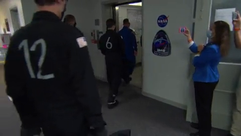
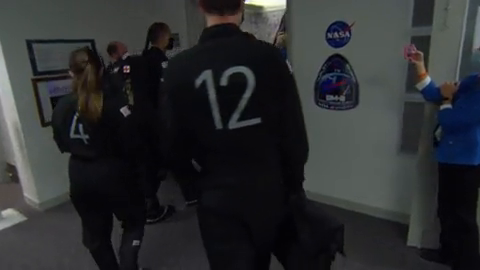
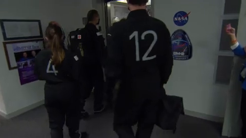
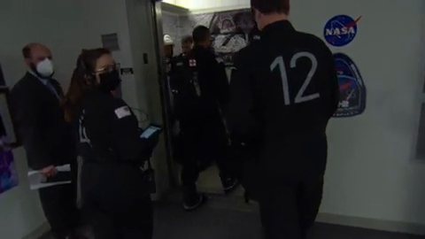
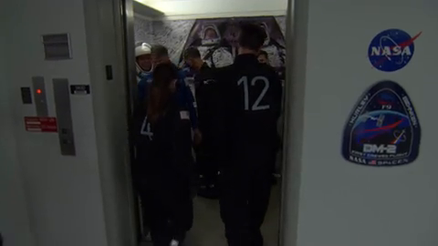
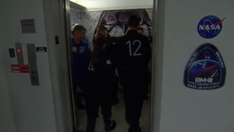
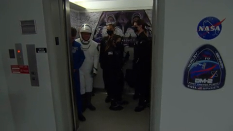
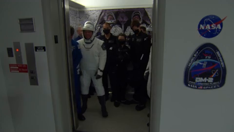
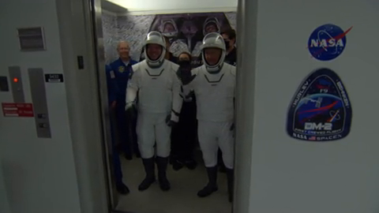
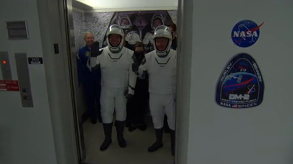

No model predictions are included. Empty labels are not ground truth; event quality has not been measured.
Review the entire declared interval. Coordinates show frozen rules, not detection boxes. Mark original media PTS, not frame index or an assumed FPS. Sampled frames cannot establish what happened between samples.
Source SHA-256 66f807b947e6e7e4e9e1538f6d11018b6bba05691ef7c8a868a6a5e2c49b567d
Protocol 4cd8860acab74e53b4030f5c774eed021e3d6400541957642758d6bb68b271b3
Source/rights: NASA KSC-20200530-MH-AJW02-0003-SpaceX_Demo-2_Walkout_Hallway_and_C7_Exit_4K preview; official NASA photographer metadata
NASA media guidelines: factual educational/informational use, acknowledge NASA, no endorsement; logos/identifiable people not licensed for commercial promotion; external technical evidence only
Blank annotation template · Scope and pending review state · Frozen rules · Frozen protocol
Record independently observed line-cross, zone-enter, zone-exit and dwell events with unique IDs/source records, rule ID, class, direction and original start/end PTS. Fill actual annotation provenance; only after an actual human review may annotationMethod be independent-human-labels. This packet does not certify reviewer independence.
Declared original decoded frames [900, 1200) contain 300 original frames. Original start PTS 460800; last included frame PTS 613888; exclusive end PTS 614400.
Selected samples end at PTS 608256. This is a sample timestamp, not the declared interval endpoint. Original PTS seconds are exact rational PTS × time base: start 30, last included 1199/30, exclusive end 40.
Open exact original media · Complete original-frame PTS mapping. Source SHA-256 66f807b947e6e7e4e9e1538f6d11018b6bba05691ef7c8a868a6a5e2c49b567d.
Native browser currentTime is its own media timeline. It is not an original PTS readout, frame-accurate seek or proof of interval review; use the exact source-frame/PTS mapping. Browser audio/orientation may differ from noautorotate video-only extraction.
The original file includes media outside the declared interval. Playback does not filter that media, mark labels, confirm coverage, or turn this pending packet into a human review. Complete the declared interval with an appropriate player before asserting completeIntervalReviewed.
| Original decoded index | Original PTS | Selected sample |
|---|---|---|
| 900 | 460800 | True |
| 901 | 461312 | False |
| 902 | 461824 | False |
| 903 | 462336 | False |
| 904 | 462848 | False |
| 905 | 463360 | False |
| 906 | 463872 | False |
| 907 | 464384 | False |
| 908 | 464896 | False |
| 909 | 465408 | False |
| 910 | 465920 | False |
| 911 | 466432 | False |
| 912 | 466944 | True |
| 913 | 467456 | False |
| 914 | 467968 | False |
| 915 | 468480 | False |
| 916 | 468992 | False |
| 917 | 469504 | False |
| 918 | 470016 | False |
| 919 | 470528 | False |
| 920 | 471040 | False |
| 921 | 471552 | False |
| 922 | 472064 | False |
| 923 | 472576 | False |
| 924 | 473088 | True |
| 925 | 473600 | False |
| 926 | 474112 | False |
| 927 | 474624 | False |
| 928 | 475136 | False |
| 929 | 475648 | False |
| 930 | 476160 | False |
| 931 | 476672 | False |
| 932 | 477184 | False |
| 933 | 477696 | False |
| 934 | 478208 | False |
| 935 | 478720 | False |
| 936 | 479232 | True |
| 937 | 479744 | False |
| 938 | 480256 | False |
| 939 | 480768 | False |
| 940 | 481280 | False |
| 941 | 481792 | False |
| 942 | 482304 | False |
| 943 | 482816 | False |
| 944 | 483328 | False |
| 945 | 483840 | False |
| 946 | 484352 | False |
| 947 | 484864 | False |
| 948 | 485376 | True |
| 949 | 485888 | False |
| 950 | 486400 | False |
| 951 | 486912 | False |
| 952 | 487424 | False |
| 953 | 487936 | False |
| 954 | 488448 | False |
| 955 | 488960 | False |
| 956 | 489472 | False |
| 957 | 489984 | False |
| 958 | 490496 | False |
| 959 | 491008 | False |
| 960 | 491520 | True |
| 961 | 492032 | False |
| 962 | 492544 | False |
| 963 | 493056 | False |
| 964 | 493568 | False |
| 965 | 494080 | False |
| 966 | 494592 | False |
| 967 | 495104 | False |
| 968 | 495616 | False |
| 969 | 496128 | False |
| 970 | 496640 | False |
| 971 | 497152 | False |
| 972 | 497664 | True |
| 973 | 498176 | False |
| 974 | 498688 | False |
| 975 | 499200 | False |
| 976 | 499712 | False |
| 977 | 500224 | False |
| 978 | 500736 | False |
| 979 | 501248 | False |
| 980 | 501760 | False |
| 981 | 502272 | False |
| 982 | 502784 | False |
| 983 | 503296 | False |
| 984 | 503808 | True |
| 985 | 504320 | False |
| 986 | 504832 | False |
| 987 | 505344 | False |
| 988 | 505856 | False |
| 989 | 506368 | False |
| 990 | 506880 | False |
| 991 | 507392 | False |
| 992 | 507904 | False |
| 993 | 508416 | False |
| 994 | 508928 | False |
| 995 | 509440 | False |
| 996 | 509952 | True |
| 997 | 510464 | False |
| 998 | 510976 | False |
| 999 | 511488 | False |
| 1000 | 512000 | False |
| 1001 | 512512 | False |
| 1002 | 513024 | False |
| 1003 | 513536 | False |
| 1004 | 514048 | False |
| 1005 | 514560 | False |
| 1006 | 515072 | False |
| 1007 | 515584 | False |
| 1008 | 516096 | True |
| 1009 | 516608 | False |
| 1010 | 517120 | False |
| 1011 | 517632 | False |
| 1012 | 518144 | False |
| 1013 | 518656 | False |
| 1014 | 519168 | False |
| 1015 | 519680 | False |
| 1016 | 520192 | False |
| 1017 | 520704 | False |
| 1018 | 521216 | False |
| 1019 | 521728 | False |
| 1020 | 522240 | True |
| 1021 | 522752 | False |
| 1022 | 523264 | False |
| 1023 | 523776 | False |
| 1024 | 524288 | False |
| 1025 | 524800 | False |
| 1026 | 525312 | False |
| 1027 | 525824 | False |
| 1028 | 526336 | False |
| 1029 | 526848 | False |
| 1030 | 527360 | False |
| 1031 | 527872 | False |
| 1032 | 528384 | True |
| 1033 | 528896 | False |
| 1034 | 529408 | False |
| 1035 | 529920 | False |
| 1036 | 530432 | False |
| 1037 | 530944 | False |
| 1038 | 531456 | False |
| 1039 | 531968 | False |
| 1040 | 532480 | False |
| 1041 | 532992 | False |
| 1042 | 533504 | False |
| 1043 | 534016 | False |
| 1044 | 534528 | True |
| 1045 | 535040 | False |
| 1046 | 535552 | False |
| 1047 | 536064 | False |
| 1048 | 536576 | False |
| 1049 | 537088 | False |
| 1050 | 537600 | False |
| 1051 | 538112 | False |
| 1052 | 538624 | False |
| 1053 | 539136 | False |
| 1054 | 539648 | False |
| 1055 | 540160 | False |
| 1056 | 540672 | True |
| 1057 | 541184 | False |
| 1058 | 541696 | False |
| 1059 | 542208 | False |
| 1060 | 542720 | False |
| 1061 | 543232 | False |
| 1062 | 543744 | False |
| 1063 | 544256 | False |
| 1064 | 544768 | False |
| 1065 | 545280 | False |
| 1066 | 545792 | False |
| 1067 | 546304 | False |
| 1068 | 546816 | True |
| 1069 | 547328 | False |
| 1070 | 547840 | False |
| 1071 | 548352 | False |
| 1072 | 548864 | False |
| 1073 | 549376 | False |
| 1074 | 549888 | False |
| 1075 | 550400 | False |
| 1076 | 550912 | False |
| 1077 | 551424 | False |
| 1078 | 551936 | False |
| 1079 | 552448 | False |
| 1080 | 552960 | True |
| 1081 | 553472 | False |
| 1082 | 553984 | False |
| 1083 | 554496 | False |
| 1084 | 555008 | False |
| 1085 | 555520 | False |
| 1086 | 556032 | False |
| 1087 | 556544 | False |
| 1088 | 557056 | False |
| 1089 | 557568 | False |
| 1090 | 558080 | False |
| 1091 | 558592 | False |
| 1092 | 559104 | True |
| 1093 | 559616 | False |
| 1094 | 560128 | False |
| 1095 | 560640 | False |
| 1096 | 561152 | False |
| 1097 | 561664 | False |
| 1098 | 562176 | False |
| 1099 | 562688 | False |
| 1100 | 563200 | False |
| 1101 | 563712 | False |
| 1102 | 564224 | False |
| 1103 | 564736 | False |
| 1104 | 565248 | True |
| 1105 | 565760 | False |
| 1106 | 566272 | False |
| 1107 | 566784 | False |
| 1108 | 567296 | False |
| 1109 | 567808 | False |
| 1110 | 568320 | False |
| 1111 | 568832 | False |
| 1112 | 569344 | False |
| 1113 | 569856 | False |
| 1114 | 570368 | False |
| 1115 | 570880 | False |
| 1116 | 571392 | True |
| 1117 | 571904 | False |
| 1118 | 572416 | False |
| 1119 | 572928 | False |
| 1120 | 573440 | False |
| 1121 | 573952 | False |
| 1122 | 574464 | False |
| 1123 | 574976 | False |
| 1124 | 575488 | False |
| 1125 | 576000 | False |
| 1126 | 576512 | False |
| 1127 | 577024 | False |
| 1128 | 577536 | True |
| 1129 | 578048 | False |
| 1130 | 578560 | False |
| 1131 | 579072 | False |
| 1132 | 579584 | False |
| 1133 | 580096 | False |
| 1134 | 580608 | False |
| 1135 | 581120 | False |
| 1136 | 581632 | False |
| 1137 | 582144 | False |
| 1138 | 582656 | False |
| 1139 | 583168 | False |
| 1140 | 583680 | True |
| 1141 | 584192 | False |
| 1142 | 584704 | False |
| 1143 | 585216 | False |
| 1144 | 585728 | False |
| 1145 | 586240 | False |
| 1146 | 586752 | False |
| 1147 | 587264 | False |
| 1148 | 587776 | False |
| 1149 | 588288 | False |
| 1150 | 588800 | False |
| 1151 | 589312 | False |
| 1152 | 589824 | True |
| 1153 | 590336 | False |
| 1154 | 590848 | False |
| 1155 | 591360 | False |
| 1156 | 591872 | False |
| 1157 | 592384 | False |
| 1158 | 592896 | False |
| 1159 | 593408 | False |
| 1160 | 593920 | False |
| 1161 | 594432 | False |
| 1162 | 594944 | False |
| 1163 | 595456 | False |
| 1164 | 595968 | True |
| 1165 | 596480 | False |
| 1166 | 596992 | False |
| 1167 | 597504 | False |
| 1168 | 598016 | False |
| 1169 | 598528 | False |
| 1170 | 599040 | False |
| 1171 | 599552 | False |
| 1172 | 600064 | False |
| 1173 | 600576 | False |
| 1174 | 601088 | False |
| 1175 | 601600 | False |
| 1176 | 602112 | True |
| 1177 | 602624 | False |
| 1178 | 603136 | False |
| 1179 | 603648 | False |
| 1180 | 604160 | False |
| 1181 | 604672 | False |
| 1182 | 605184 | False |
| 1183 | 605696 | False |
| 1184 | 606208 | False |
| 1185 | 606720 | False |
| 1186 | 607232 | False |
| 1187 | 607744 | False |
| 1188 | 608256 | True |
| 1189 | 608768 | False |
| 1190 | 609280 | False |
| 1191 | 609792 | False |
| 1192 | 610304 | False |
| 1193 | 610816 | False |
| 1194 | 611328 | False |
| 1195 | 611840 | False |
| 1196 | 612352 | False |
| 1197 | 612864 | False |
| 1198 | 613376 | False |
| 1199 | 613888 | False |



















